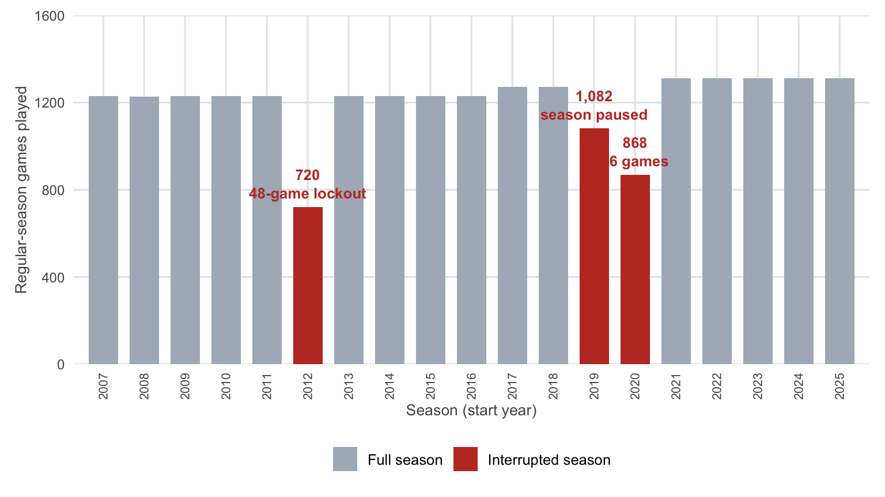
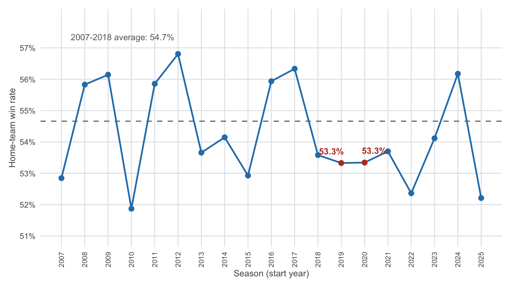
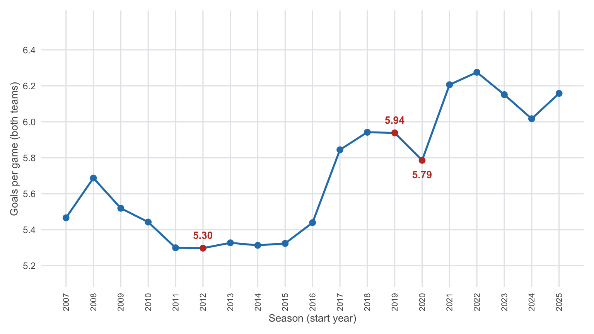
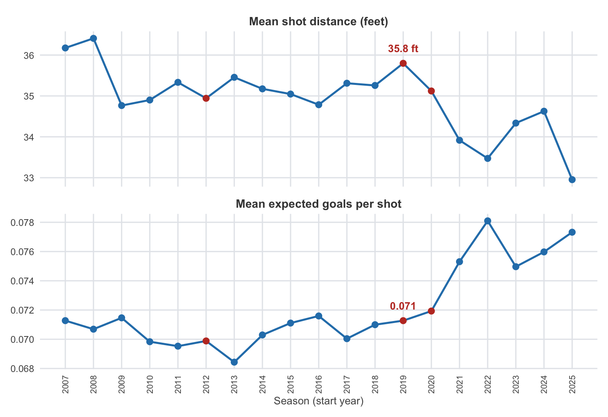

When the Stands Went Empty
On March 12, 2020, the puck stopped.
The season froze mid-stride. When it came back, the arenas were silent and the calendar looked nothing like before.
A data story about 2019-20, 2020-21, and what a crisis does to the record book.
Act I: The Interruption
The NHL’s heartbeat is a number: 1,230 regular-season games a year — later 1,271, then 1,312 as the league grew. The record book keeps the rhythm perfectly, which is exactly why the breaks stand out.
Three seasons broke it. In 2012-13, a lockout wiped out the first half of the schedule and the league squeezed 48 games into three months — just 720 in total. In 2019-20, the season stopped on March 12, 2020 with 1,082 of 1,271 games played: 189 games simply never happened. When play resumed that summer, it did so inside closed bubbles in Toronto and Edmonton — 24 teams, a qualification round nobody had planned for, and a playoff that ballooned to 130 games, more than 40 more than a typical spring.
Then came 2020-21: a 56-game schedule, division-only opponents, and 868 games played in near-silence.
Regular-season games played by season. The three interrupted seasons are highlighted.
189
Games Never Played (2019-20)
130
Bubble Playoff Games
56
Games per Team (2020-21)
Act II: Silence in the Stands
Home ice was never just a phrase. The crowd, the last change, the wear of travel — across the seasons before the pandemic, home teams won about 54.7% of their games.
So what happens when you take the crowd away? In 2019-20, half its games were played in empty buildings; in 2020-21, almost all of them. Both seasons, home teams won exactly 53.3% of their games — a dip of nearly a point and a half from the old norm.
But notice what didn’t happen: home ice didn’t disappear. The edge thinned; it didn’t vanish. And the dip didn’t begin with the pandemic — 2018-19 had already slipped to 53.6%. The story the data tells is quieter than the mythology: a small, persistent home advantage, slightly dented, weathering the strangest conditions the league has ever played under.

Home-team win rate in the regular season. Dashed line: the 2007-2018 average. The two pandemic seasons sit just below it — reduced, not erased.
Act III: A Different Kind of Season
2020-21 hockey felt different. A January start, a May finish, division-only opponents, almost no travel — teams played the same handful of rivals on back-to-back nights, over and over. The scoring sagged with it: 5.79 goals per game, down from 5.94 the year before and the lowest rate since 2016-17.
The shots changed shape, too. Attempts fell to about 60 per game, from roughly 63 a year earlier, while shooting percentage edged up to 9.66%. Fewer shots, slightly sharper ones, fewer goals — a grinding, defensive year produced by a schedule with no breathing room.
The pause, meanwhile, interrupted offense at its peak. Through 2019-20 the league was scoring 5.94 goals a game — the best rate in this dataset’s modern era up to that point. The lights went off at the wrong moment, and when they came back on, the goals didn’t come with them.

Total goals per game in the regular season. Interrupted seasons are highlighted: 2012-13 never moved the rate, but 2020-21 dipped.
Act IV: The Lesson in the Numbers
Shortened seasons were not new in 2020. The lockout year of 2012-13 produced 5.30 goals per game — wedged between 5.30 in 2011-12 and 5.33 in 2013-14. The lockout changed the calendar, not the game.
The same is true of the pandemic, down at the level of the ice itself. Look at where shots came from: in 2019-20 the average attempt launched from 35.8 feet, in 2020-21 from 35.1 — and their expected-goal value barely moved, 0.071 then 0.072. Both seasons sit right on the long trend line. The pandemic didn’t change where shots came from. The ice stayed the ice.
The real shift came after: by 2021-22, shots were more than a foot closer and worth measurably more — but that is a different evolution, one the pause didn’t cause.

Where shots come from: average distance and expected-goal value of every shot attempt. The pandemic seasons follow the trend; the break comes after.
So here is the rule for reading this record: rate stats survive a crisis — counting stats don’t. Strip out 189 games and every leaderboard, point total, and save count is built on a different foundation than the seasons around it. Per-game rates hold up. When you browse the seasons in the Exploration tab, remember that 2019 means 2019-20 and 2020 means 2020-21 — two seasons that don’t play by the usual rules.
53.3%
Home Wins, Both Seasons
5.79
Goals per Game (2020-21)
35.1 ft
Avg Shot Distance (2020-21)
The Takeaway
What did the pandemic mean for the league? The data answers in three parts:
- The bubble held. 130 games played in isolation, a full playoff completed safely — the template every other sports league rushed to copy.
- Home ice thinned but survived. Empty buildings cost home teams about a point and a half of win rate — real, but far short of the edge’s disappearance.
- The calendar broke; the game didn’t. Goals, distances, and expected values all stayed on trend. It was the schedule — never the ice — that the crisis rearranged.
And rearranged it for good: the division-only realignment invented out of necessity in 2020-21 became permanent, the revenue hole froze the salary cap for years, and the league that emerged kept a new appreciation for how much of the game lives in the numbers.
See it for yourself.
Head to the Exploration page and pull up seasons 2019 and 2020 alongside every other year.
Shot data is sourced from MoneyPuck. Seasons are labeled by start year: 2019 = 2019-20, 2020 = 2020-21, 2012 = 2012-13. Playoff game counts include the 2020 qualification and round-robin rounds.